Emerging from the 1940s–50s, these genres developed in parallel with the mainstream Hopstep lineage. Their public collision at Redstone (1964) defined the post-war cultural landscape.
Working class, guitar-forward, raw. Calumet / Pittsburgh / Ohio Valley. Hard electric subgenre (Thunder) emerges Liu/Mercer era.
Urban, theatrical, coded queer roots. Northeastern. Synth/ethereal subgenre (Aether-Metro / Aether) emerges Liu/Mercer era.
Gulf Continental. Caribbean/Mexican influences fused with Ragstep foundation. Warm, percussion-forward, danceable.
Pacific Continental. Spanish/Anglo/emerging Asian influences. New Boston / Columbia / California. Cooler, more experimental.
The prestige jazz analog. Emerges late 19th C. African American and Creole traditions, brass band culture, improvisational character. Insider musician slang: "razz."
Appalachian folk/bluegrass adjacent. Closer to OTL bluegrass than OTL country. Regional but persistent. Bicentennial boom mid-to-late 1970s.
Latin/German Texian fusion. Enduring regional genre with devoted audience along the Mississippi corridor.
Space-influenced, electronic, cosmic. First genuinely Interlink-native genre. Accessible wing (Pulse) and cerebral experimental wing (Pulsar).
The defining WBT musical genre emerging from New Orleans in the late 19th/early 20th century. Related to but distinct from OTL jazz — similar ingredients (African American and Creole musical traditions, brass band culture, improvisational character) but crossing into mainstream culture faster due to the absence of hard Jim Crow. Predominantly Black in its golden age. Insider musician slang: "razz."
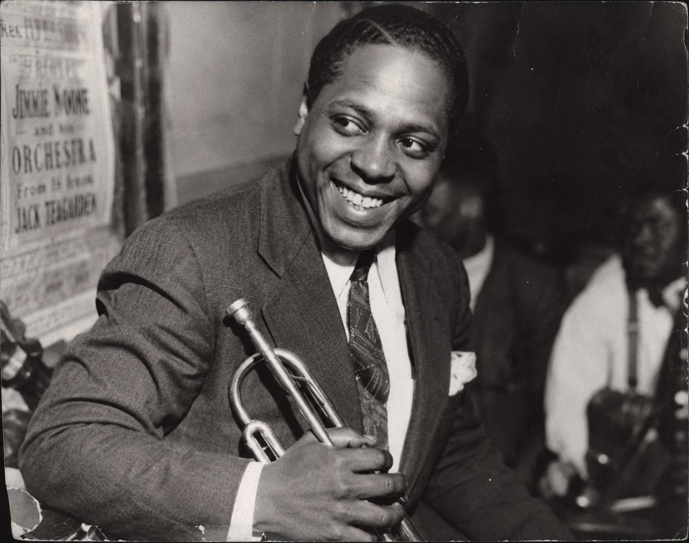
The man who took Blaze national through early radio. Warm, charismatic, a brilliant improviser — when people in 1922 Kansas City first heard Blaze on their radio sets, his was the sound they heard. MBC's signature early artist, deeply intertwined with the network's rise.
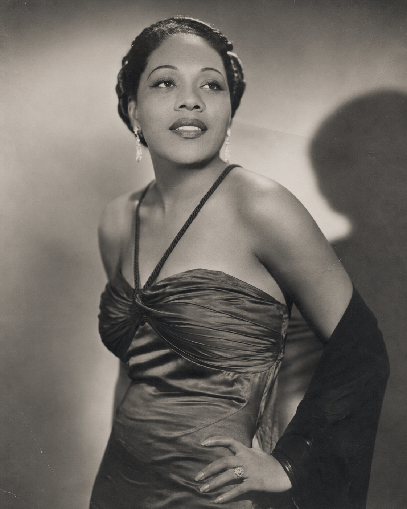
The Queen of Blaze. Dignified, compositionally sophisticated — the artist who made Blaze serious without making it cold. Her recordings from the early-to-mid 1930s are the genre's artistic peak. The first Blaze artist reviewed in the serious music press as a genuine composer rather than just an entertainer. Critically considered the greater talent even if Broussard is more broadly famous.
The evolution of Ragtime as it absorbed Blaze influences in the 1920s–30s. The WBT equivalent of OTL swing — big band orchestras, brass-heavy, dancehall culture, the sound that fills ballrooms and comes through the radio on Saturday nights. The Global War (1932–1939) defines Ragstep's cultural legacy. By 2026, Ragstep is nostalgia tier: beloved, period-coded, played at revival events and in period films.
The defining Ragstep bandleader — polished, establishment, the sound of a nation at its most sophisticated. Enlists in the mid-1930s to lead military bands during the Global War. Friendly rival to James Wolf; both perform joint victory concerts. Returns home to resume a career deepened by wartime experience.
Cherokee bandleader from Gigadohi (native-majority state, northern Mississippi). His Ragstep has a distinctive texture — subtle Cherokee musical traditions woven into the big band sound. Friendly rival to Glenn Monroe; both enlist, serve side by side, and perform joint victory concerts. His postwar legacy is among the most respected in WBT music history.
The voice of home for a generation at war. New England born, warm and sincere rather than technically showy. Occasional wartime work alongside Monroe and Wolf but fundamentally her own artist. Her recordings are what soldiers carried; her voice on the radio is what they heard when homesick. The Forces' Sweetheart.
The electrification of Ragstep in the late 1940s — swing that plugs in but never becomes rock and roll. Still sophisticated, still swing-derived, but electric instruments and a guitar-forward character mark the generational shift. Dominant mainstream sound of the 1950s. Shortens to "Hop" in common usage. By 2026, nostalgia tier — beloved, periodic revivals.
Where OTL swing was overtaken by rock and roll, WBT's electrified swing tradition simply kept evolving — the specific conditions that produced rock (racial segregation creating separate development tracks) do not exist in WBT.
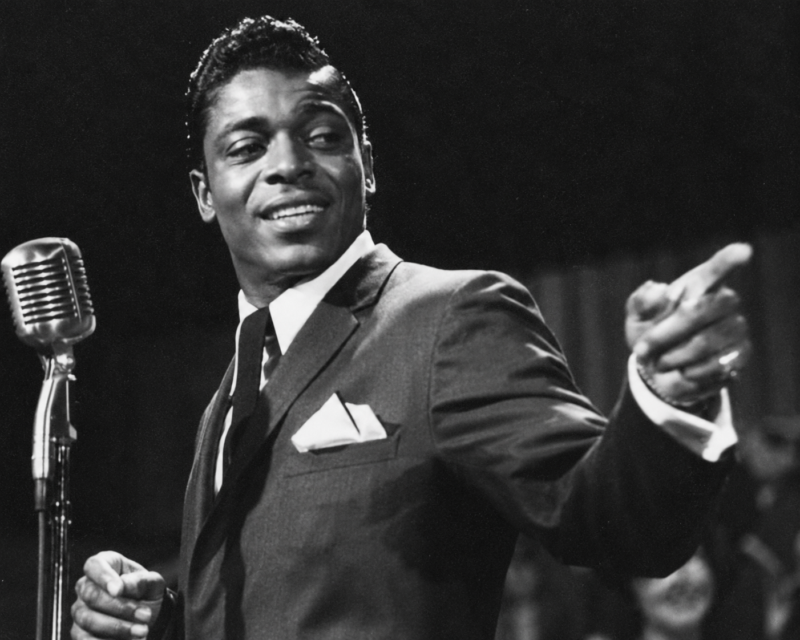
The revolutionary who doesn't live to see the revolution complete. Begins as a Ragstep bandleader in the early 1940s, pioneers the electrified Hopstep sound in the late 1940s, becomes a breakout star by the early 1950s. Black, dashingly handsome, flashy and charismatic. Dies in a car accident in 1955. "Midnight Drive" becomes his most remembered song posthumously — its irony noted reverently by music historians ever since.
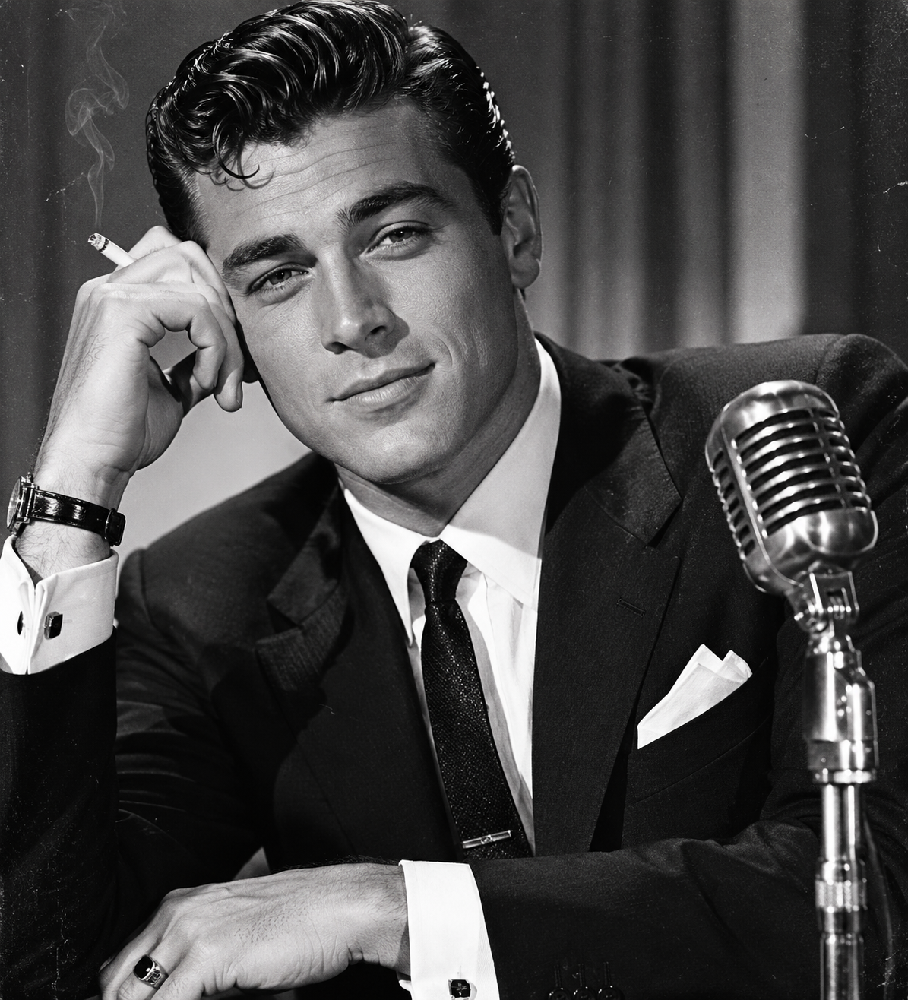
Cool, effortlessly sophisticated — the Sinatra of Hopstep. Where Drake was electric and flashy, Merritt is smooth and controlled. Barely moves on stage and commands every eye in the room. Emerges as the dominant voice of Hopstep's golden age after Drake's death.
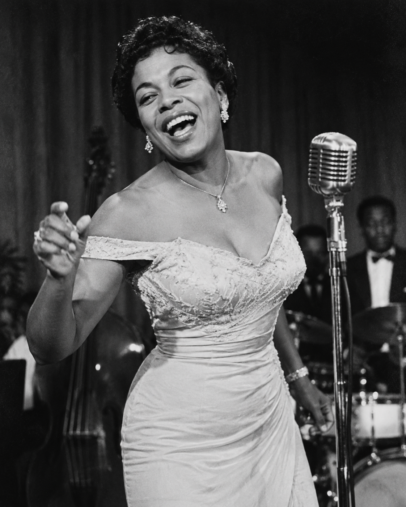
Big personality, joyful and powerful, unapologetically herself. The one who inherited Drake's populist energy and made it entirely her own. Black, glamorous, her performances events rather than shows. Her tender numbers reveal a depth that surprises audiences who only know her as a powerhouse.
Boltstep emerges in the early 1950s from the industrial interior — Calumet, Pittsburgh, the Ohio Valley. Ragstep ancestry audible but stripped down: smaller ensembles, guitar-forward, faster, less polished. The working class sound. Shortens to "Bolt" in common usage. By 2026, one of the two dominant mainstream genres.
Thunder — the hard electric subgenre — emerges in the Liu/Mercer era (mid-1990s–2000s). Bolt pushed to its loudest and most aggressive. By 2026, sits comfortably in the second tier.
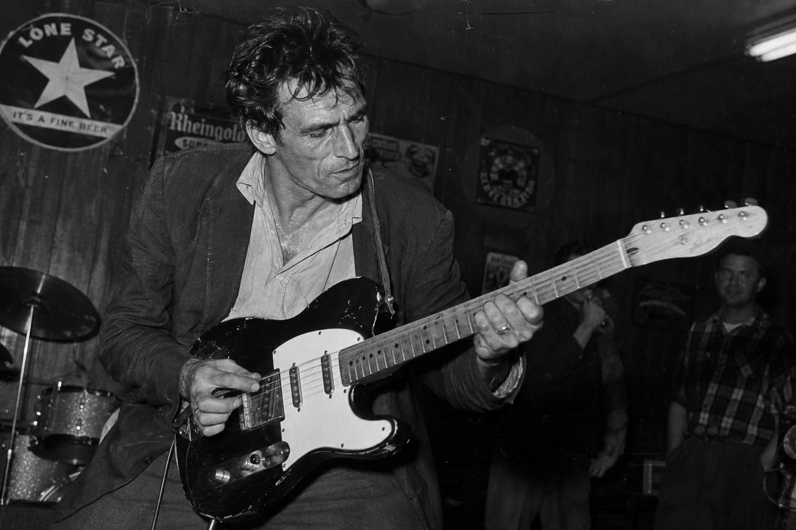
White, Ohio Valley born, the working class purist. Raw and unpolished — his Bolt is blunt force. Founding figure alongside Otis Sharp; their rivalry is musical rather than personal, about whose vision of Bolt is the "real" one.
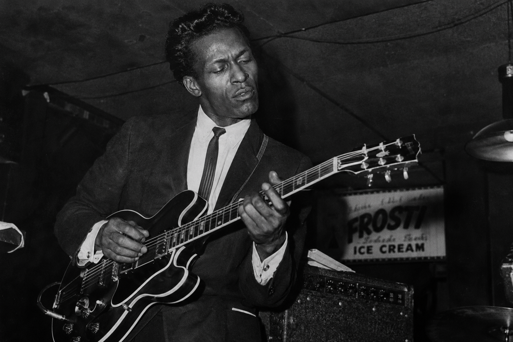
Black, Blues-adjacent phrasing, slightly southern inflected. His Bolt has an edge and precision distinctly his own: lean, intense, every note placed with purpose. Friendly rival to Malone. Music historians note Sharp's influence on Bolt's evolution may exceed even Malone's despite Malone's broader early fame.
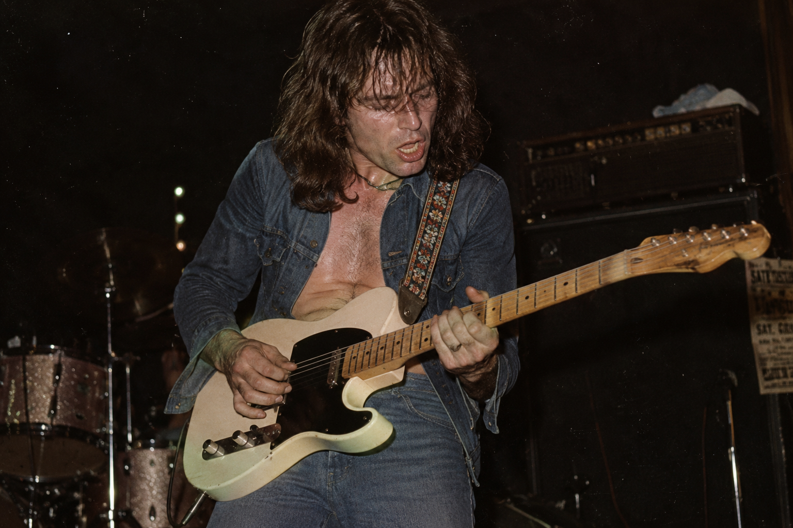
White, Ohio Valley. The next generation of Bolt — slightly more expansive than Malone's pure blunt force, absorbing traces of the Redstone era cross-pollination, but still fundamentally working class and guitar-forward.
Lakota Nation, the first significant female figure in Bolt. Her plains heritage brings something into the industrial interior sound that nobody quite expected — geographic and cultural depth behind the guitar-forward working class character. Owns every stage she walks onto.
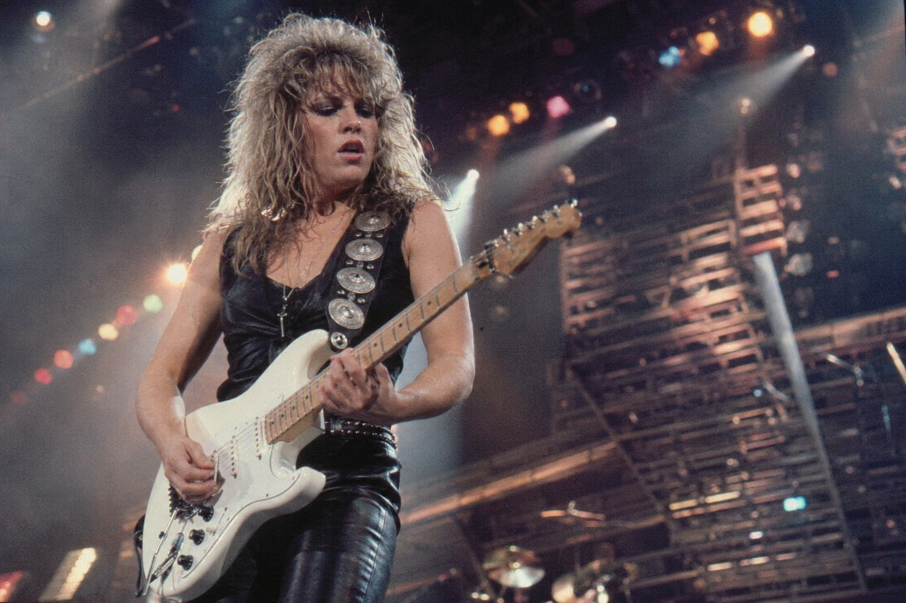
White, Pittsburgh born. The most purely Bolt of the Long Boom era figures — rooted, authentic, no frills. Her sound is the industrial city at its most honest: proud without being sentimental, tough without being cold. Earns respect rather than demands it.
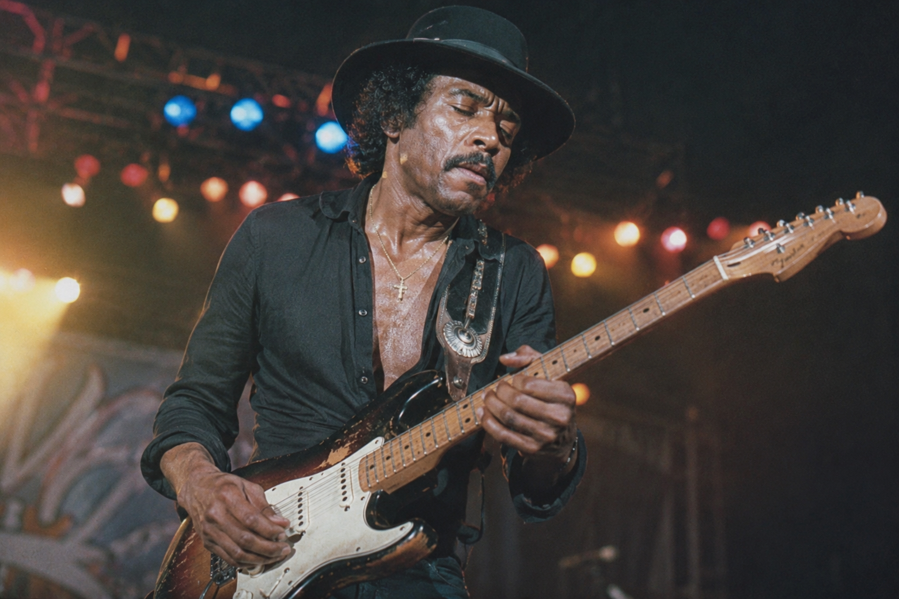
Black, Memphis born. His Bolt carries the Blues-adjacent Southern character of Otis Sharp updated for the Long Boom era — with a sharper edge of skepticism toward the prosperity that doesn't reach everyone. Already pointing toward where Thunder will go in the 1990s.
Black, Atlanta born. The defining voice of Thunder — loudest, most confrontational, most commercially successful. Coming from Atlanta rather than the traditional industrial interior, her Bolt carries a Southern Black working class fire that pure Ohio Valley Bolt never had. The one who made Thunder a household name.
Cherokee, Gigadohi — connecting back to James Wolf's legacy a generation later in a completely different genre. His Bolt processes the era's anxiety with more complexity than pure Thunder aggression. His Native heritage gives the working class anger a longer historical dimension that critics find devastating. The thinking person's Thunder.
Kaw Nation, Kanasaw. Contemporary and confident — carrying the tradition of June Blackcloud forward into the 2020s without being derivative of it. Her Bolt is rooted in plains identity but speaks universally to working class audiences across the continent.
White, Boston Irish working class. A Bolt star from Metro's hometown — a deliberate artistic choice that gets written about. Her sound has a distinctly northeastern urban edge: not industrial interior working class but city working class, rough around the edges in a different way than the Ohio Valley tradition.
Black, St. Louis born. Sits at the Mississippi corridor crossroads between Memphis and Chicago — his Bolt carries Curtis Bowman's Southern Blues-adjacent character updated for the 2020s, with the warm commanding authority of an established major artist.
Japanese-American, New Boston. The most experimental of the contemporary Bolt artists — his Pacific Northwest background filters Brisa's Pacific influences into Bolt's working class electric character. The genre has traveled a long way geographically and culturally if a Japanese-American Pacific Northwest artist is one of its contemporary stars.
Metrostep roots in the 1930s–40s as an offshoot of Ragstep — theatrical, performative, camp sensibility, tied to drag culture and specific urban venues in Boston, Manhattan, and New Orleans. Coded but recognizable to insiders. Shortens to "Metro" in common usage by the late 1950s–60s. Boston is the genre's heartland — the gay mecca of WBT's USA.
Two distinct artistic traditions run through Metro's history: the theatrical/camp tradition (Sterling, Lumière, Divina, Corazón) and the satirical tradition (Goldman, DeLuca, Washington, Chevalier). Many artists blend both. Under Pike (1983–1989), Metro has its triumphant moment — fully out of coded underground, decades of suppressed openness pouring into joyful music.
Aether-Metro / Aether — the synth/ethereal subgenre — emerges in the Liu/Mercer era. Metro going inward rather than outward after the Pike-era celebration. Spacious, melancholy, Art Nouveau aesthetic sensibility. By 2026, Metro remains one of the two dominant mainstream genres alongside Bolt, with trans/non-binary rights as the next frontier in its ongoing political conversation.
The gay mecca of WBT's USA. Metro's heartland. Where the culture is most developed and confident. The source of the theatrical/camp tradition.
Close enough to Boston to be in constant dialogue. Home of Metro's satirical tradition. Where Metro gets its most commercially visible expressions.
Absorbing and riffing on what comes from Boston/Manhattan. Adds Gulf Continental warmth to Metro's northeastern character.
The NAU's cosmopolitan hub. Metro meets Continental influences here. Home to Roland Washington and Jae Park.
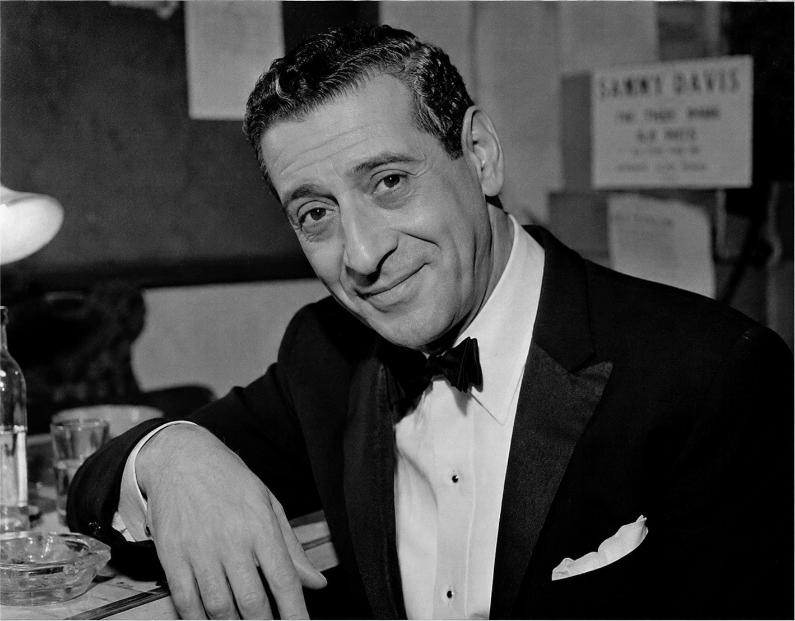
Jewish, Boston. The founding voice of Metro's satirical tradition — sophisticated, warmly coded, his commentary wrapped in enough wit and plausible deniability that the establishment can't quite pin it down. His songs have a second meaning operating on a completely different level from the surface reading. The bridge builder — moves in mainstream spaces while being unmistakably Metro to insiders.
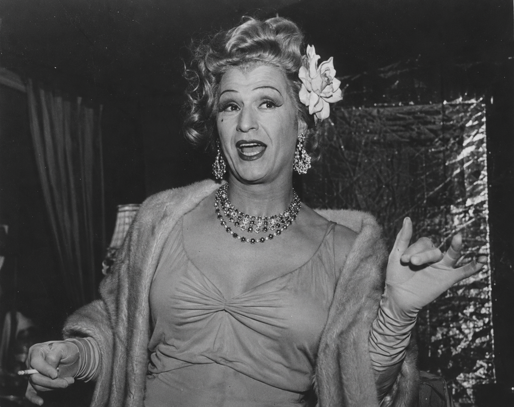
White, Irish/Anglo working class Boston. The founding voice of Metro's theatrical/camp tradition — witty and sharp with warm theatricality. Performs in specific Boston venues to audiences who know what they're seeing without it ever being stated. His drag is coded but unmistakable. Arthur Marsh offstage; Sterling on stage and to the wider world.
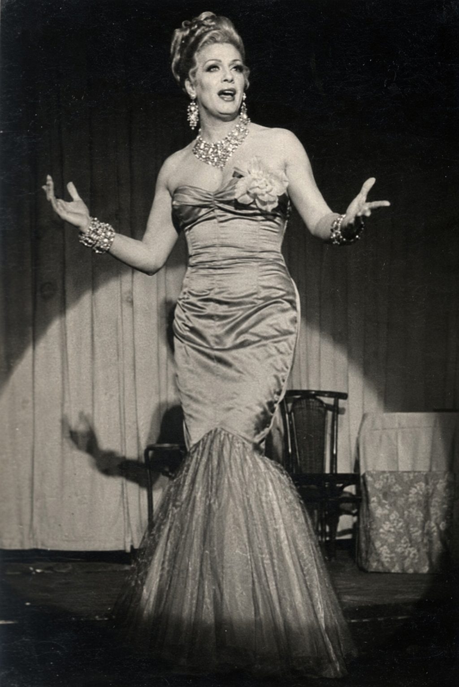
White, upper middle class Boston. Sterling's tradition carried forward and elevated — more polished, more overtly glamorous, performing in a slightly more open early 1960s atmosphere. Edward Hartley from a respectable Boston family who was supposed to do respectable things and instead became Lumière. His repertoire blends theatrical glamour with Goldman's coded sophistication.
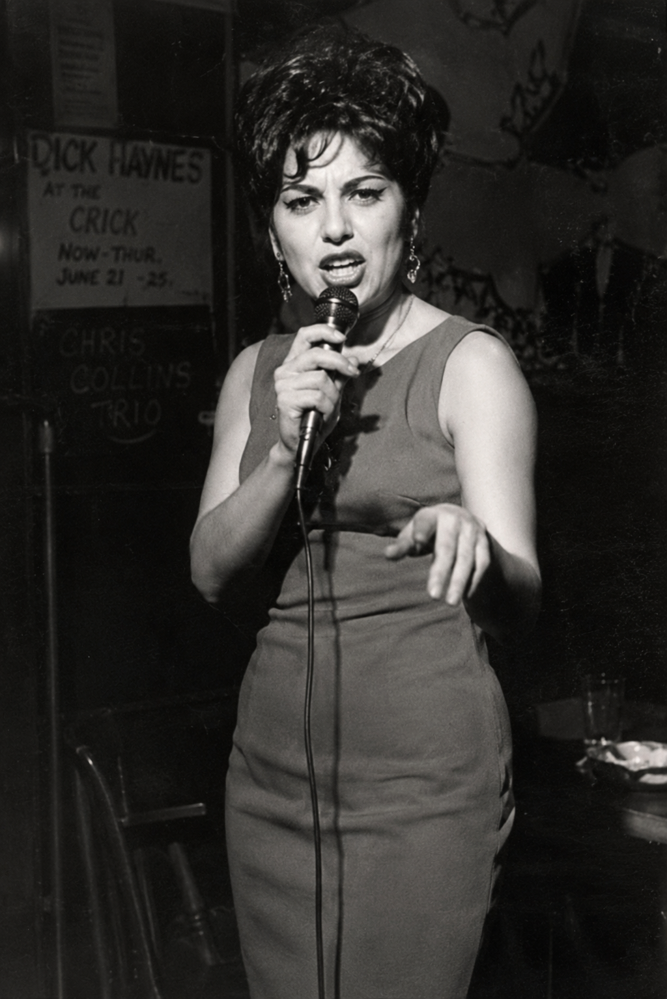
Italian-American, outer borough Manhattan, self-made arts world figure. Goldman's satirical tradition with the gloves off — elegant delivery, devastating content. Where Goldman wrapped commentary in warm sophistication and plausible deniability, DeLuca lets the edge show. The Lincoln presidency gives her just enough air to be sharper than any Metro satirist before her. "Madame President" becomes a lasting cultural artifact.
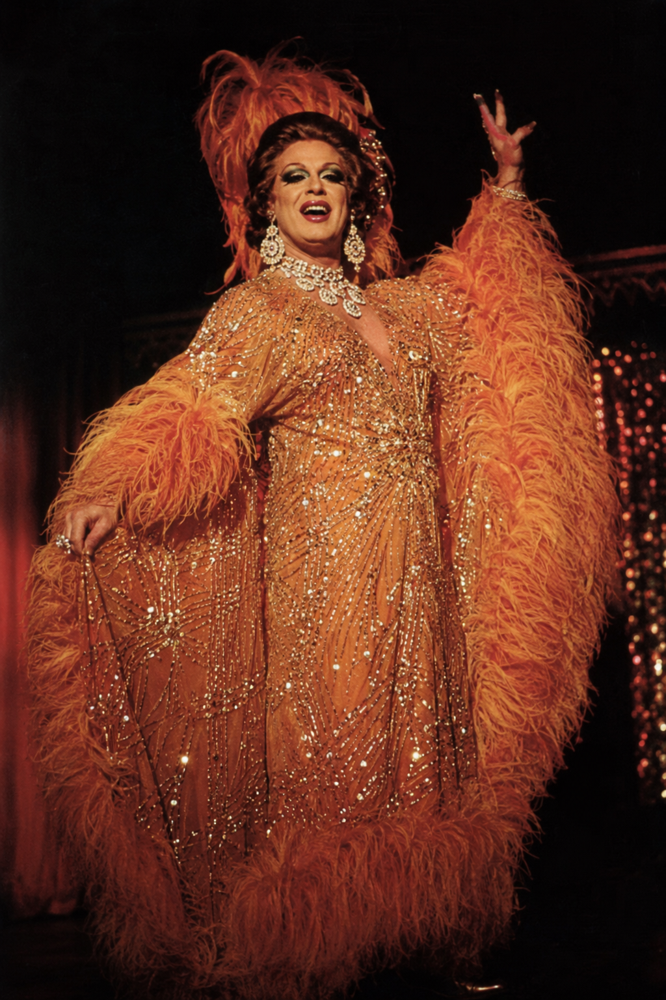
White, middle class Boston. The theatrical tradition taken to its most glorious extreme — Lumière's glamour amplified for the post-Redstone era. Performing in a more open atmosphere than his predecessors, Divina doesn't need to hide and doesn't want to. The name says everything: not just divine, but Divina.
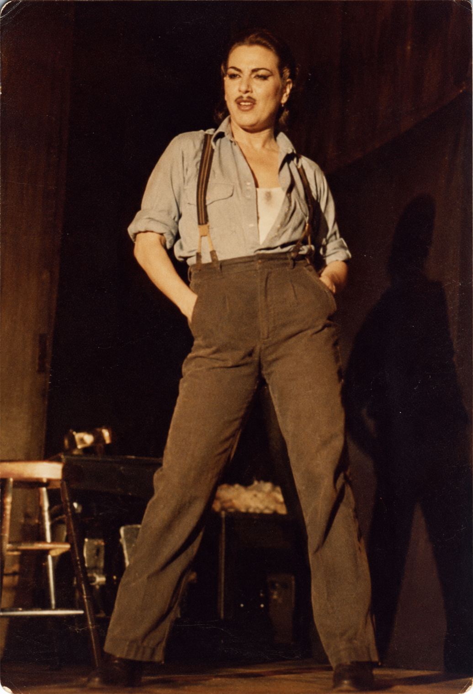
White, Philadelphia. Metro's first significant drag king — performing masculine rather than feminine, the working class tough with a knowing wink. Sharon Burke from Philadelphia becomes Big Eddie on stage: completely committed to the archetype while the audience always catches the wink underneath. Metro's theatrical tradition applied to masculine performance for the first time.
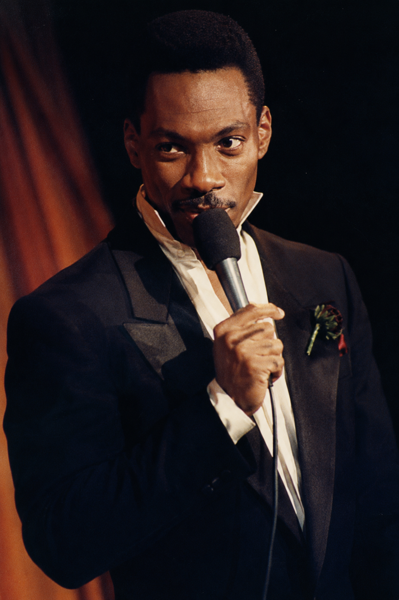
Black, Calumet arts world. Goldman and DeLuca's satirical tradition filtered through a completely different cultural experience — the first Black Metro artist of note, bringing a more continental, internationally aware character to Metro's satirical lineage. His satire is broad: doesn't shy from gay rights (he's gay) but it's never the sole focus. Dabbles in spoken word alongside music. Performing as the Pike era approaches, his work is part of the cultural groundwork that makes Pike's America possible.
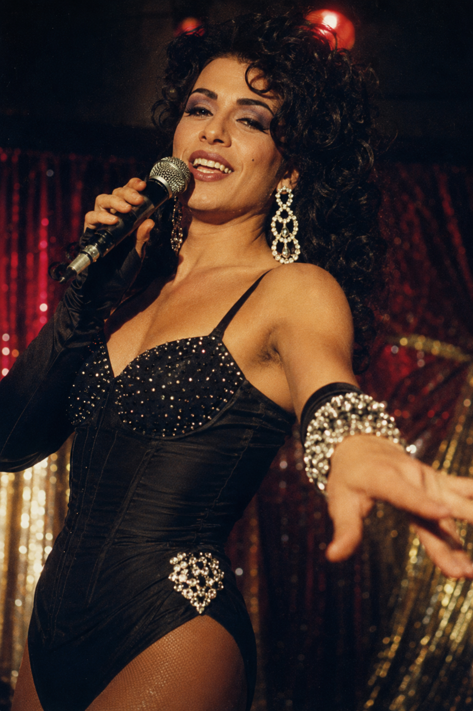
Puerto Rican, Manhattan. The Metro artist most identified with the Pike era's triumphant cultural moment — warm, fluid, sometimes fully in drag as a woman, sometimes clearly a man in feminine presentation, always completely charismatic. His breakout hit "Mr. President" — camp affectionate mock-scandal about Pike — becomes one of the defining cultural artifacts of the era. The heart made visible on stage.
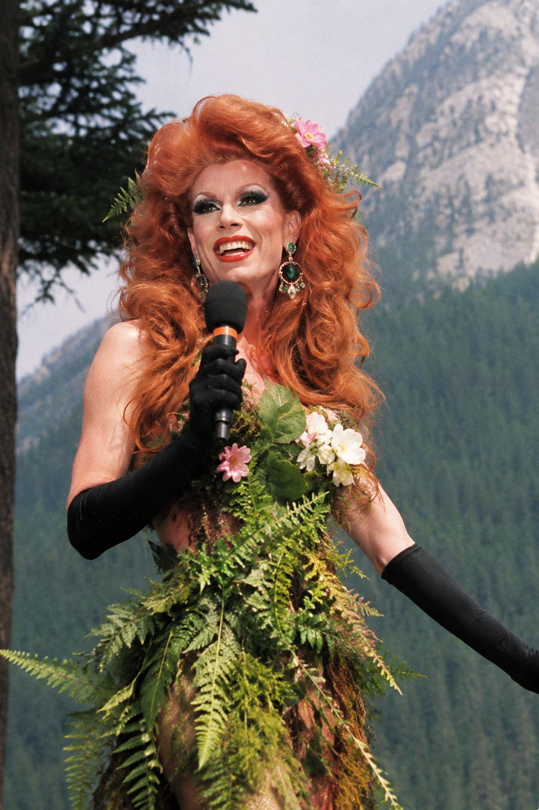
White, New Boston. Metro reaching the Pacific Northwest — his drag blends full glamour with the outdoor world he loves, completely at home being both fully glamorous and fully outdoors simultaneously. Green politics and environmental activism woven into his artistic identity. The most geographically distant from Metro's Boston heartland, his work says something about how far the genre has traveled.
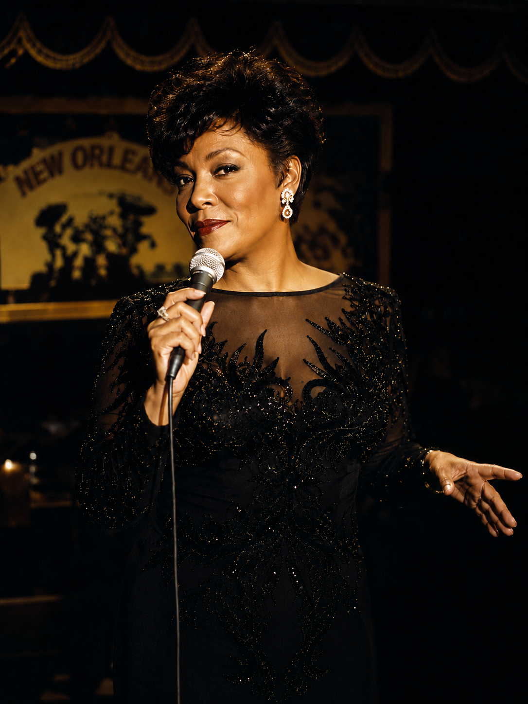
Black, New Orleans. DeLuca and Washington's satirical tradition carried into the Gulf South — elegant delivery, devastating content. Her New Orleans ease makes the blade less visible until it's already in. Where DeLuca let you see the edge coming, Chevalier keeps it hidden until you're already bleeding. The most composed and polished Metro satirist in the genre's history.
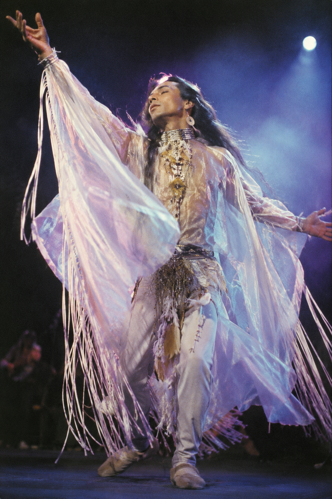
Choctaw Nation, Gigadohi origins, Calumet based. The defining Aether-Metro artist — big, flowing, ethereal costumes that are genuinely otherworldly, performances that blur the boundary between this world and something beyond it. His displacement from Gigadohi to Calumet is built into the music without being stated. The distance between "Nathaniel Wesley" and "Vesper" is almost the whole biography.
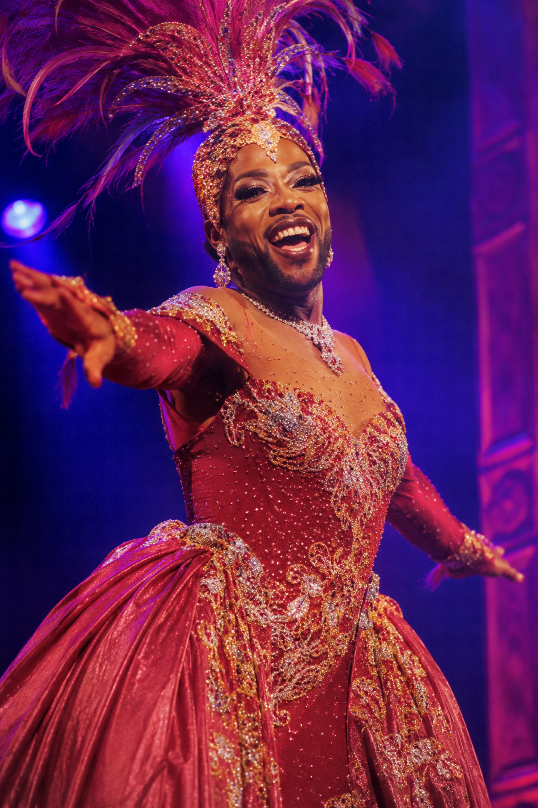
Black, Boston. The direct heir to Metro's theatrical drag tradition — carrying it forward with 2026's fully normalized, joyful, "celebrate who you are" energy. His drag is pure affirmation: no coding, no hiding, just the complete and joyful expression of who Jerome Harris is. The tradition carried home to Metro's heartland by someone who never had to hide.
Mexican-American, Franklin. Non-binary artist whose work sits at the intersection of Metro's theatrical tradition and something more personal and vulnerable. The trans/non-binary rights conversation present in their music without ever being didactic. "Remy" — just their own name as a song title — is perhaps their most radical artistic statement. A Franklin family's child making Metro in the capital city.
Jewish, Manhattan. Carrying Goldman, DeLuca, and Chevalier's satirical tradition into 2026 — sharp, elegant, devastating. Her targets are contemporary: NAU politics, social media culture, the absurdity of modern public life. The composure is the weapon. Her reviews make publicists nervous. The most directly connected to Metro's satirical founding tradition of any contemporary artist.
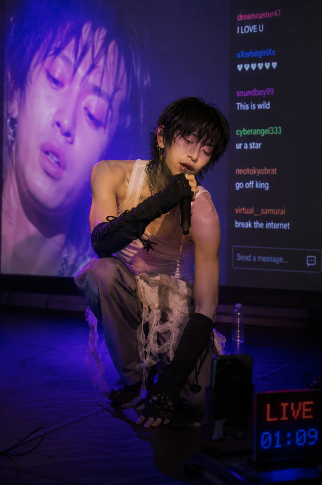
Korean-American, Calumet. The most forward-looking of the contemporary Metro artists — their work exists as much on the Interlink as on stage, blurring the boundary between performance and digital culture. Post-Chinese Spring Pacific influences meeting Metro's theatrical tradition through the Link. The first genuinely Interlink-native Metro artist. Uses their real name — a deliberate choice in a tradition full of stage names.
New Orleans centered. A three-way fusion: Ragtime/Ragstep foundation + Blaze's improvisational character + Caribbean and Mexican Gulf influences. Warm, percussion-forward, rhythmically rich, danceable. By 2026, firmly in the second tier. NAU integration deepening gives Zinga consistent cultural tailwind.
New Boston / Columbia / California centered. Spanish/Anglo/emerging Asian fusion. Cooler and more experimental than Zinga. The name means "breeze" in Spanish. By 2026, benefits especially from Chinese Spring (2019) opening new sonic influences into the Pacific cultural corridor.
Space-influenced, electronic, cosmic. Gestates under Mercer (2001–2007), blooms fully under Sinclair (2007–2013). The first genuinely Interlink-native genre. Two wings: accessible EDM-adjacent (Pulse) and cerebral experimental (Pulsar). Sonic character: vast, electronic, cosmic — space as a real place people live and work, not romantic abstraction.
Appalachian folk/bluegrass adjacent — closer to OTL bluegrass than OTL country. Regional but persistent. Major Americana boom mid-to-late 1970s tied to the bicentennial. By 2026, waning from that peak but firmly in the second tier.
Latin/German Texian fusion. Enduring regional genre with devoted audience in Texas Federation territory and along the Mississippi corridor. Sits below the second tier in 2026 — niche but not nostalgia.
An unnamed minor current running alongside the main commercial evolution throughout the 20th century. The serious musicians' reaction against commercialization — faster, more complex, more intellectual, deliberately difficult to dance to. Less racialized than OTL bebop but not entirely devoid of racial tensions. Critically respected, never mainstream. Not yet formally named in canon.